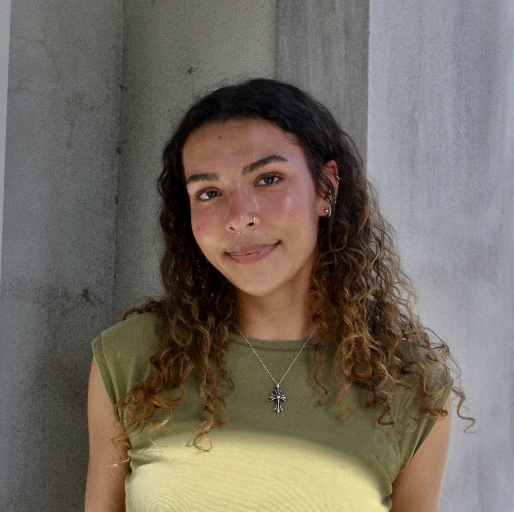

Æch Kil

Hi, I'm Hannah Kilpatrick a multi-media artist and graphic design student working under the name Æch Kil. My work focuses on visual storytelling that connects people, sparks conversation, and builds community. I am currently seeking opportunities to grow as a designer and expand my professional experience, with a particular interest in the music industry and creative work that supports artists, audiences, and human innovation.
Stay connected with me!